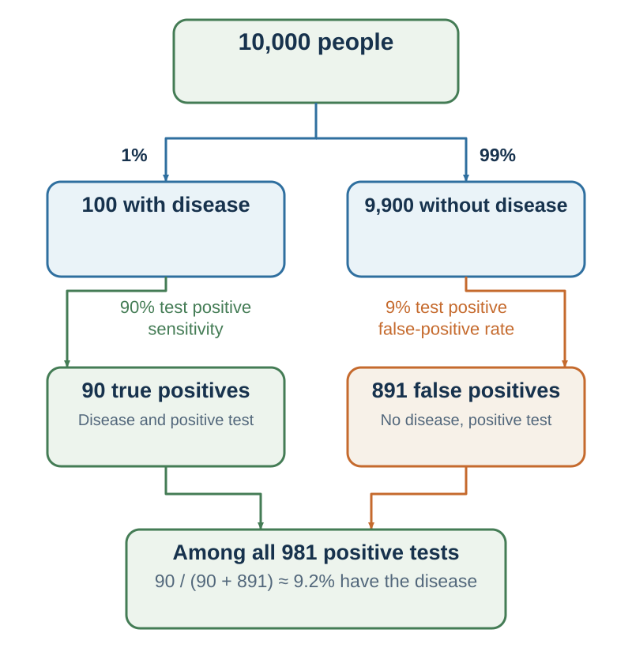

13 Probability Judgment: The Mind Loves Stories; Statistics Need Reference Classes
Probability is not a feeling of plausibility. It is a disciplined way to represent uncertainty, combine evidence, and learn from error.
Learning goals
- Use complements, intersections, unions, conditional probability, independence, total probability, and Bayes’ rule.
- Translate conditional probabilities into natural frequencies.
- Diagnose conjunction, disjunction, dilution, and base-rate errors.
- Separate random clustering from genuine dependence, and explain regression to the mean.
- State the protocol assumptions behind Monty Hall and two-child problems.
- Record, score, and calibrate probabilistic forecasts.
Opening puzzle: which sequence looks random?
A fair coin will be tossed six times. Rank these exact sequences from most to least likely:
- H H H H H H
- H H H T T T
- H T H T H T
Most people find the first sequence suspicious and the third comfortably random. But each specified sequence has probability
\[ \left(\frac{1}{2}\right)^6=\frac{1}{64}. \]
The mind is answering a sensible but different question: Which sequence resembles my prototype of randomness? Alternation looks random; a streak looks designed. Probability asks what event was specified before the tosses and how many elementary outcomes belong to it.
This distinction resolves an apparent contradiction. The exact sequences above are equally likely, but the class “three heads and three tails in any order” contains \(\binom{6}{3}=20\) sequences, whereas “all heads or all tails” contains only two. The first class therefore has probability \(20/64\) and the second \(2/64\). A single outcome and a category of outcomes are not interchangeable.
That is the journey of this chapter. Intuition supplies a story; formal probability restores the event, denominator, and information protocol.
Probability begins by specifying the model
A sample space \(\Omega\) lists the elementary outcomes allowed by a model. An event \(A\) is a subset of those outcomes. A probability measure assigns numbers satisfying three basic requirements:
\[ 0\le P(A)\le 1, \qquad P(\Omega)=1, \]
and probabilities add for mutually exclusive events. These rules are simple. Applying them responsibly requires more: the sample space, probability model, and reference class must fit the real process.
Calling a coin fair assumes that each side has probability one-half. Calling successive tosses independent assumes that an earlier result does not change the next probability. Those are modeling claims, not properties created by the notation. A damaged coin, a shuffled deck without replacement, an adaptive algorithm, or a tired player may generate dependence.
The formal language is useful because it prevents several ordinary ambiguities.
Complement: what remains when an event does not occur
If \(A^c\) means “not \(A\),” then
\[ P(A^c)=1-P(A). \]
If a project has a 0.70 probability of finishing by Friday under a stated model, it has a 0.30 probability of not finishing by Friday. The complement must refer to the same event boundary and time horizon. “Not finished by Friday” is not the same as “the project fails.”
AND: intersections require a conditional probability
For two events \(A\) and \(B\),
\[ P(A\cap B)=P(A)P(B\mid A). \]
The second term asks how likely \(B\) is after learning that \(A\) occurred. If the events are independent, then \(P(B\mid A)=P(B)\) and the multiplication rule becomes
\[ P(A\cap B)=P(A)P(B). \]
Independence is stronger than “the events can both happen.” Rain and traffic delay are not mutually exclusive, but they may be dependent. Two draws from a deck without replacement are dependent because the first draw changes the composition of the deck.
OR: add, then subtract the overlap
For “\(A\) or \(B\) or both,”
\[ P(A\cup B)=P(A)+P(B)-P(A\cap B). \]
If \(A\) and \(B\) are mutually exclusive, their intersection is empty and the subtraction term is zero. A flight may be delayed by weather, crew problems, or both; simply adding the two probabilities would double-count flights in the overlap.
Conditional probability: direction matters
Provided \(P(B)>0\),
\[ P(A\mid B)=\frac{P(A\cap B)}{P(B)}. \]
\(P(A\mid B)\) and \(P(B\mid A)\) generally answer different questions. “How often does the test turn positive among people with the disease?” is not “How often do people with a positive test have the disease?” The denominators differ.
Two events are independent when learning one does not change the probability of the other:
\[ P(A\mid B)=P(A), \]
whenever the conditional probability is defined. Zero correlation is not, in general, the same as independence; independence rules out every probabilistic relationship, whereas zero correlation only rules out a particular linear association.
Total probability: rebuild the denominator
If \(A\) and \(A^c\) partition the cases, then
\[ P(B)=P(B\mid A)P(A)+P(B\mid A^c)P(A^c). \]
This equation is the denominator that intuitive judgment often loses. Event \(B\) can arrive through the \(A\) branch or the not-\(A\) branch. Both paths count.
Bayes’ rule: reverse the conditioning without reversing the evidence
Combining the multiplication rule with total probability gives
\[ P(A\mid B)= \frac{P(B\mid A)P(A)} {P(B\mid A)P(A)+P(B\mid A^c)P(A^c)}. \]
The prior probability \(P(A)\) supplies the starting prevalence. The likelihood \(P(B\mid A)\) describes how compatible the evidence is with \(A\). The competing likelihood \(P(B\mid A^c)\) asks how often the same evidence appears without \(A\). The posterior \(P(A\mid B)\) is the updated belief (Bayes, 1763).
Bayes’ rule cannot rescue a poor model. A posterior is conditional on the prior, likelihoods, measurement quality, and hypothesis set supplied. Missing alternatives, selected samples, changing environments, and uncertain parameters remain substantive problems.

The logical constraints behind conjunction and disjunction
The previous chapter introduced the Linda problem and the pull of representativeness. Probability now supplies the non-negotiable boundary:
\[ P(A\cap B)\le P(A), \qquad P(A\cap B)\le P(B). \]
Adding a condition can make a description more coherent, vivid, and representative. It cannot make the set larger. “A bank teller active in a social movement” is a subset of “a bank teller.” This is the conjunction rule, independent of whether the description sounds more like the person.
The corresponding disjunction boundary is
\[ P(A\cup B)\ge P(A), \qquad P(A\cup B)\ge P(B). \]
Organizations often underestimate aggregate failure because they assess each route separately. No single cause—supplier delay, staff turnover, regulatory review, software defect, or client revision—feels dominant. Yet the probability that at least one route delays the project can be substantial. The correction is not to add every percentage mechanically; routes may overlap. Map the union and its intersections.
Dilution: more information can make evidence worse
Additional detail feels like additional knowledge. But information has value only when it changes the likelihood ratio or the decision. Irrelevant or weakly diagnostic details can dilute attention to stronger evidence.
Sivanathan and Kakkar (2017) demonstrated this in six experiments with 3,059 participants. Adding minor side effects to a list of serious drug side effects reduced perceived overall severity and increased the drug’s attractiveness. The serious information did not become less true. It became less prominent in the average impression.
This does not imply that minor effects should be hidden. It implies that risk communication should preserve severity and diagnosticity rather than present an undifferentiated list. Group evidence by consequence, likelihood, and decision relevance. Transparency requires completeness and structure.
Natural frequencies make Bayes visible
Suppose 1% of a population has a disease. A test is positive for 90% of people who have it and for 9% of people who do not. A person tests positive. What is the probability that the person has the disease?
The number 90% is tempting because it is attached to the test. But it is \(P(+\mid D)\), not \(P(D\mid +)\).
Imagine 10,000 people:
- 100 have the disease; 90 of them test positive.
- 9,900 do not have the disease; 891 of them test positive.
- There are therefore 981 positive tests, of which 90 are true positives.
So
\[ P(D\mid +)=\frac{90}{90+891}=\frac{90}{981}\approx 0.0917. \]
Only about 9.2% of positive tests in this model are true positives. Natural frequencies help because they keep the nested sets and denominator visible (Gigerenzer & Hoffrage, 1995).
The same directional error appears in court. A one-in-a-million probability of a particular DNA profile among unrelated people is not a one-in-a-million probability that a matched defendant is innocent. The latter requires a prior over possible sources, the number and selection of people compared, laboratory error, relatedness, and the rest of the evidence. Treating \(P(E\mid I)\) as \(P(I\mid E)\) is the prosecutor’s fallacy (Thompson & Schumann, 1987).
Reference classes are choices, not facts delivered by nature
A base rate is only as useful as its reference class. Should a start-up be compared with every new company, companies in the same sector, companies at the same funding stage, or companies led by founders with similar experience? A narrower class may be more relevant but smaller and noisier. A broader class is more stable but less tailored.
Base-rate use is not simply present or absent. People are more likely to neglect a base rate when individuating detail feels causally diagnostic and the statistic feels incidental (Bar-Hillel, 1980). The outside view therefore asks what happened in comparable cases before explaining why this case is special (Kahneman & Lovallo, 1993). A defensible process uses several nested classes, reports how results change, and states why one class receives more weight. “This case is unique” is a hypothesis, not a denominator.
Small samples produce stories faster than evidence
People expect a small sample to resemble its population too closely—the “law of small numbers” (Tversky & Kahneman, 1971). Three successful hires make a selection method feel validated. Two product failures condemn a market. A short winning streak reveals skill. Yet sampling variation is largest when the sample is small.
For an independent Bernoulli event with probability \(p\), the standard error of the sample proportion is
\[ SE(\hat p)=\sqrt{\frac{p(1-p)}{n}}. \]
With \(p=0.5\), the standard error is about 0.158 for \(n=10\) but 0.050 for \(n=100\). The population process did not become more stable; the estimate did.
Selection makes the problem harder. Public success stories omit quiet failures. A fund enters a ranking because it just performed unusually well. A hospital is investigated because its rate was extreme. Data selected on an extreme outcome are especially likely to move toward the mean later.
Gambler’s fallacy and hot hands require different process models
After five roulette reds, black may feel “due.” Under independent fair spins, it is not: the wheel has no memory. The gambler’s fallacy treats short-run balancing as a physical correction. Lottery players have even avoided recently drawn numbers, behavior consistent with believing those numbers are temporarily less likely (Clotfelter & Cook, 1993).
After five successful shots, however, another success may feel more likely. That hot-hand belief could be another misreading of random clusters, or it could reflect genuine state dependence: confidence, fatigue, defensive adjustment, learning, selection of shot difficulty, or changing conditions.
Gilovich, Vallone, and Tversky (1985) famously argued that basketball observers saw more streak dependence than the data supported. Miller and Sanjurjo (2018) later identified a finite-sample bias in common analyses of hit-after-hit rates and showed that some earlier tests understated streakiness. The updated lesson is not “the hot hand is always real.” It is:
- specify the data-generating process;
- correct the statistic for selection and finite samples;
- distinguish an exact sequence from a class of streaks;
- test state dependence rather than infer it from appearance.
Randomness can cluster. Dependence can also exist. A pattern alone decides neither.
Ritual, correlation, and adaptive knowledge
When a ritual precedes success, repetition can feel causal. Skinner’s pigeons repeated movements that had accidentally preceded food, illustrating how intermittent reinforcement can maintain “superstitious” behavior (Skinner, 1948). Sports rituals and investment rules can develop the same way.
But not every tradition without a modern explanation is irrational. Cultural practices may encode accumulated knowledge about toxins, weather, food preparation, or cooperation. The correct question is not whether a practice looks scientific. It is whether changing the practice changes outcomes under credible comparison, and whether a plausible mechanism or reliable long-run evidence exists.
Regression to the mean: extreme outcomes contain extreme noise
Suppose performance is
\[ Y=\theta+\varepsilon, \]
where \(\theta\) is a persistent component and \(\varepsilon\) is temporary noise. Selecting an unusually high \(Y\) selects cases with high persistent ability, favorable noise, or both. When the next noise term is less extreme, performance tends to move toward average even if ability does not change.
For two standardized measures with correlation \(r\), the simple linear prediction is
\[ \widehat z_2=r z_1. \]
If a measure two standard deviations above average has test–retest correlation \(r=0.40\), the best linear prediction under that model is only \(0.8\) standard deviations above average. This is not punishment for success. It is shrinkage for unreliability.
The Israeli flight-instructor example makes the attribution error vivid. Praise follows unusually good performance and criticism follows unusually poor performance. The next performance often looks worse after praise and better after criticism. An instructor may conclude that criticism works and praise harms, even if both changes partly reflect regression (Kahneman & Tversky, 1973).
Regression does not show that an intervention had no effect. It shows that before–after improvement among units selected for extreme performance cannot identify the effect by itself. Use comparison groups, repeated pre-periods, credible counterfactuals, and uncertainty intervals.
Information protocols change the answer
Probability puzzles often appear to have one surprising answer. They actually have one answer conditional on a protocol.
Monty Hall
You choose one of three doors. One hides a prize; two hide goats. A host who knows the locations always opens a different door showing a goat and always offers a switch. Your initial door retains probability \(1/3\); the two-door set you did not choose began with probability \(2/3\). The host’s rule transfers that \(2/3\) to the only unopened alternative. Switching wins with probability \(2/3\) (Selvin, 1975).
Change the host protocol and the answer can change. If the host sometimes opens a door at random, sometimes reveals the prize, or offers a switch selectively, the opened door carries different information. “A goat was shown” is not enough; we need \(P(\text{host action}\mid\text{prize location})\).
Two children
Suppose a randomly sampled two-child family is known to have at least one boy, with independent equally likely sexes and no other selection. The remaining ordered possibilities are boy–boy, boy–girl, and girl–boy, so the probability of two boys is \(1/3\).
If instead the older child is identified as a boy, the younger child’s probability is \(1/2\). If a parent volunteers “I have a boy,” the answer depends on how parents choose which child and statement to mention. The wording does not merely decorate the problem; it defines the sampling event.
The transferable question is: How was this information generated?
Calibration: make probability answerable to outcomes
A forecaster is calibrated when events assigned 70% occur about 70% of the time, events assigned 20% occur about 20% of the time, and so forth. Calibration is a property of repeated forecasts, not one dramatic success.
Accuracy has another dimension: resolution or discrimination. A forecaster who says 50% for everything may be calibrated in a balanced environment but provides little useful separation. Good forecasting requires probabilities that are both calibrated and responsive to information.
For a binary event with forecast \(p\) and outcome \(o\in\{0,1\}\), the Brier score is
\[ BS=(p-o)^2. \]
Lower is better. A 70% forecast scores \(0.09\) if the event occurs and \(0.49\) if it does not. Across many forecasts, average the scores. For multicategory forecasts, one common convention sums squared errors across all categories; because scales then differ, the convention must be stated before comparing scores (Brier, 1950; Murphy, 1973).
Forecasting tournaments show that judgment can improve through habits rather than clairvoyance: decompose the question, start with a base rate, use several reference classes, update in small increments, seek disconfirming evidence, and obtain feedback (Mellers et al., 2014). Numeric forecasts also reveal false agreement. Two colleagues may both say “likely” while one means 55% and the other 90%.
A useful forecast record contains:
| Field | Example |
|---|---|
| Event and resolution rule | “The supplier passes acceptance testing by 30 September, documented by signed report.” |
| Probability and date | 0.65 on 1 June |
| Reference classes | Similar suppliers; same supplier’s last ten deliveries |
| Main evidence | Prototype passed; staffing still incomplete |
| Alternatives | Delay from certification, integration, or staffing |
| Update triggers | Test failure, new staff, scope change |
| Outcome and score | Enter after resolution; do not rewrite the original forecast |
Worked application: a positive hiring signal
A candidate passes a screening test. Before celebrating the test’s “80% accuracy,” separate the quantities:
- What proportion of applicants in the relevant pool would later meet the performance standard?
- Among strong future performers, how often does the screen pass them?
- Among weaker future performers, how often does it also pass them?
- Was the test validated on a comparable applicant pool and outcome?
- Does the organization use the screen alone or combine it with independent work samples?
The Bayesian posterior is useful only if the criterion is meaningful and the validation sample transports to the present setting. A precise posterior from a biased outcome measure is precisely misleading.
Worked application: a project with many routes to delay
A team assigns 15% to supplier delay, 10% to regulatory delay, and 20% to software delay. Adding gives 45%, but that total is valid only if the events are mutually exclusive. They are not: a supplier delay can create a software delay, and regulatory changes can affect both.
The team should build a small event tree or simulation with conditional probabilities, then compare it with the empirical delay rate for similar projects. The inside model explains pathways; the outside view checks whether the combined result is plausible. If the model says 18% while comparable projects miss the date 55% of the time, the discrepancy is evidence—not an invitation to discard the base rate.
Ethics: a denominator can persuade as strongly as a story
Probability formats are not neutral. Relative risk can make a small absolute change look large. A narrow reference class can make performance look exceptional. A long list of minor harms can dilute a severe one. A model can bury uncertainty behind decimal places.
Ethical probability communication asks:
- What population, time horizon, and comparison define the denominator?
- Are absolute counts shown alongside percentages?
- Are false positives, false negatives, and uncertainty visible?
- Is the reference class chosen for relevance or persuasion?
- Can the person affected inspect the assumptions and correct the model?
- Will the forecast and outcome remain recorded after the decision?
The goal is not to remove judgment. It is to make judgment auditable.
Key ideas
- Probability rules operate on defined events: complements subtract from one, intersections multiply through a conditional probability, and unions add after subtracting overlap.
- Conditional direction matters. Bayes’ rule combines a prior with evidence and its alternatives; natural frequencies preserve the denominator.
- Conjunctions cannot exceed their components, while unions cannot be smaller than their components. Extra detail can increase narrative fit while reducing probability or diluting diagnostic evidence.
- Small samples produce large fluctuations. Random clustering is not proof of dependence, and apparent streaks require a process model and corrected test.
- Regression to the mean follows when extreme observations contain temporary noise; before–after change among extreme cases does not identify causation.
- Monty Hall and two-child answers depend on how information was generated.
- Calibration requires recorded numeric forecasts, explicit resolution rules, scoring, and feedback.
Study and practice
- A 2% event has a test with 95% sensitivity and a 10% false-positive rate. Translate the problem into 10,000 natural-frequency cases and calculate \(P(\text{event}\mid +)\).
- Give one pair of events that are mutually exclusive and one pair that are independent. Explain why the terms are not synonyms.
- A team lists five overlapping failure routes. How would you estimate the probability that at least one occurs without double-counting?
- Why can all-heads be as likely as one specified mixed sequence but less likely than the category “three heads and three tails”?
- What evidence would distinguish gambler’s fallacy from genuine state dependence?
- Explain regression to the mean without claiming that every improvement is statistical.
- State the host protocol required for the \(2/3\) Monty Hall switching result.
- Score a 0.80 forecast when the event occurs and when it does not. Which miss is penalized more, and why?
References cited in this chapter
Bar-Hillel, M. (1980). The base-rate fallacy in probability judgments. Acta Psychologica, 44(3), 211–233.
Bayes, T. (1763). An essay towards solving a problem in the doctrine of chances. Philosophical Transactions of the Royal Society of London, 53, 370–418.
Brier, G. W. (1950). Verification of forecasts expressed in terms of probability. Monthly Weather Review, 78(1), 1–3.
Clotfelter, C. T., & Cook, P. J. (1993). The “gambler’s fallacy” in lottery play. Management Science, 39(12), 1521–1525.
Gigerenzer, G., & Hoffrage, U. (1995). How to improve Bayesian reasoning without instruction: Frequency formats. Psychological Review, 102(4), 684–704.
Gilovich, T., Vallone, R., & Tversky, A. (1985). The hot hand in basketball: On the misperception of random sequences. Cognitive Psychology, 17(3), 295–314.
Kahneman, D., & Lovallo, D. (1993). Timid choices and bold forecasts: A cognitive perspective on risk taking. Management Science, 39(1), 17–31.
Kahneman, D., & Tversky, A. (1973). On the psychology of prediction. Psychological Review, 80(4), 237–251.
Mellers, B., Stone, E., Atanasov, P., Rohrbaugh, N., Metz, S. E., Ungar, L., Bishop, M. M., Horowitz, M., Merkle, E., & Tetlock, P. E. (2014). The psychology of intelligence analysis: Drivers of prediction accuracy in world politics. Journal of Experimental Psychology: Applied, 20(1), 1–14.
Miller, J. B., & Sanjurjo, A. (2018). Surprised by the hot hand fallacy? A truth in the law of small numbers. Econometrica, 86(6), 2019–2047.
Murphy, A. H. (1973). A new vector partition of the probability score. Journal of Applied Meteorology, 12(4), 595–600.
Selvin, S. (1975). A problem in probability. The American Statistician, 29(1), 67.
Sivanathan, N., & Kakkar, H. (2017). The unintended consequences of argument dilution in direct-to-consumer drug advertisements. Nature Human Behaviour, 1, 797–802.
Skinner, B. F. (1948). “Superstition” in the pigeon. Journal of Experimental Psychology, 38(2), 168–172.
Thompson, W. C., & Schumann, E. L. (1987). Interpretation of statistical evidence in criminal trials: The prosecutor’s fallacy and the defense attorney’s fallacy. Law and Human Behavior, 11(3), 167–187.
Tversky, A., & Kahneman, D. (1971). Belief in the law of small numbers. Psychological Bulletin, 76(2), 105–110.
Tversky, A., & Kahneman, D. (1974). Judgment under uncertainty: Heuristics and biases. Science, 185(4157), 1124–1131.
Tversky, A., & Kahneman, D. (1983). Extensional versus intuitive reasoning: The conjunction fallacy in probability judgment. Psychological Review, 90(4), 293–315.